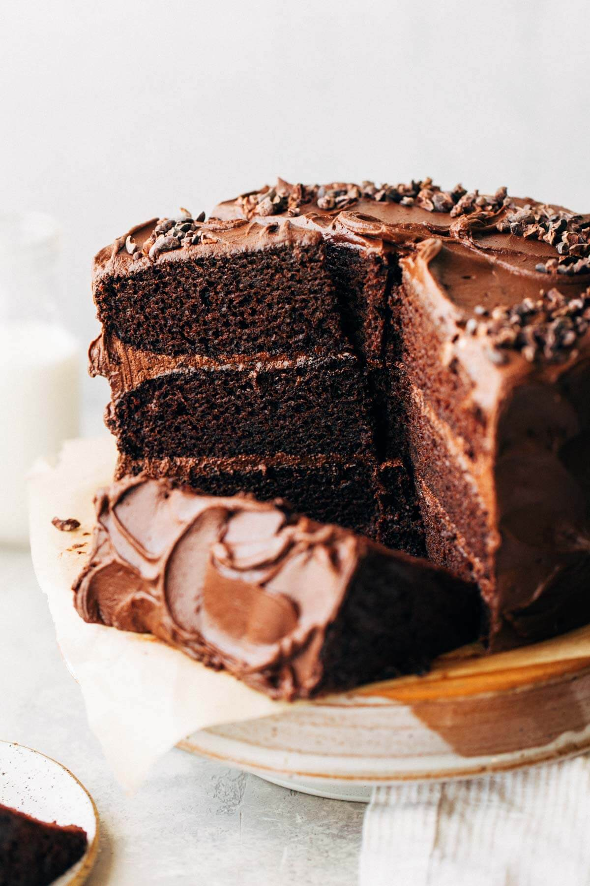

Chocolate Cake (Vegan)

Description
This is hands down one of the BEST chocolate cakes ever, and it just so happens to be vegan!
But don’t let that steer you away from making it if you don’t follow a vegan diet, especially if you’re looking for a rich and moist chocolate cake recipe.
The texture is super soft and decadent with a silky and fudgy chocolate frosting. They like to call this Matilda cake because they honestly just want to dig their hands in. It’s just. so. GOOD!
Ingredients
Chocolate Cake
- 1 1/2 cups (360g) non dairy milk (I recommend soy)
- 1 tbsp apple cider vinegar or white vinegar
- 3 cups (400g) all purpose flour
- 1 cup (80g) unsweetened cocoa powder, sifted
- 2 tsp baking powder
- 1 1/2 tsp baking soda
- 3/4 tsp salt
- 2 1/4 cups (485g) granulated sugar
- 1 cup (255g) unsweetened apple sauce
- 1 cup (200g) mild oil (vegetable, canola, almond, avocado…etc)
- 1 tbsp vanilla extract
- 1 cup hot water
- 1 1/2 tsp instant espresso powder
Chocolate Frosting
- 1 cup (220g) plant-based butter, room temp (I recommend Earth Balance vegan buttery sticks)
- 1 cup (190g) vegetable shortening
- 3 cups (360g) organic powdered sugar
- 1 cup (60g) unsweetened cocoa powder, sifted
- 1 tsp vanilla extract
Decoration
- Cacao Nibs, Vegan Sprinkles or Vegan Chocolate Chips
Steps
Chocolate Cake
- Preheat the oven to 350F and spray (3) 8″ cake pans with nonstick spray and line the bottoms with parchment paper. *see notes for making a 2 layer cake*
- Mix together the milk and vinegar and set aside to curdle (making a vegan buttermilk).
- Whisk together the flour, cocoa powder, baking powder, baking soda, and salt in a medium bowl and set aside.
- n a large bowl, either whisking by hand or with an electric mixer, combine the sugar, apple sauce, oil, and vanilla.
- On the side, mix together the hot water and espresso powder. Set aside.
- To the sugar mixture, alternate adding the milk and dry ingredients, starting and ending with the dry ingredients. Stop and scrape down the bowl about halfway through.
- Once that’s smooth, slowly mix in the hot espresso. Now the batter will be very thin.
- Pour the batter into the cake pans and bake for 30-35 minutes, or until a toothpick in the center comes out clean.
- Allow the cakes to cool in the pans for 20 minutes, then remove from the pans and let them completely cool at room temperature before frosting. To speed up this process, you can pop them into the fridge.
Chocolate Frosting
- Using an electric mixer, cream together the butter and shortening until smooth (use whisk attachment).
- Mix in the powdered sugar, one cup at a time, followed by the cocoa powder. Mix in the vanilla.
- If it’s too thin, add 1/2 cup of powered sugar until you reach the desired consistency. If it’s too thick, add 1-2 tbsp non dairy milk.
Assemble
- Only frost the cake once the layers have completely cooled.
- Spread about 1 cup of frosting between each cake layer (a small offset spatula is my favorite tool for this). Once all layers are stacked, place the naked cake in the fridge to set. Otherwise, the cake will slide around when trying to frost the sides. Chill for 20 minutes.
- Once firm, remove the cake and plop the rest of the frosting on top of the cake (yes, all of it). Spread it out towards the sides and let it hang over the edges. Spread that overhang down the sides to the bottom of the cake. The sides don’t have to be perfect, but just make sure the cake is completely covered.
- Use your offset spatula or a spoon to create the swoops and swirls all around the cake. Sprinkle with your favorite toppings and enjoy!